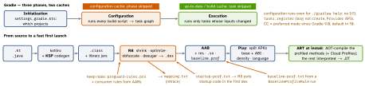

cross-platform · folio
In one line: A release build is Gradle (configure a task graph, then run only out-of-date tasks) driving kotlinc/KSP → R8 → dex → AAB; Play splits it per device. At runtime ART interprets/JITs unbundled code such as Compose, so a Baseline Profile tells it what to compile ahead of time at install. Prove every win with Macrobenchmark + Perfetto.
Download PDF Print view LaTeX source


Gradle & AGP
- Config cache (
org.gradle.configuration-cache=true) stores the task graph; build cache (org.gradle.caching=true, local or remote) stores task outputs keyed by input hashes — CI shares them. - Version catalog
gradle/libs.versions.toml→libs.hilt.android; convention plugins (includedbuild-logicbuild) share module setup. apileaks a dependency to consumers → wider recompiles; preferimplementation.- KSP over kapt (Java stubs, maintenance mode): up to 2× faster — but one kapt processor left keeps stubs for the module.
- AGP 9: Kotlin built in (no
kotlin-androidplugin), new DSL only, Gradle ≥ 9.1.
R8 — full mode (default since AGP 8.0)
- Tree-shakes from entry points (manifest, keep rules), inlines, merges classes, renames; unused resources go too (AGP 9: optimized resource shrinking).
- Full mode vs compat: a kept class no longer keeps its default constructor;
Signature/annotations kept only for kept items even with-keepattributes— GsonTypeToken, Retrofit generics break. -keep(name + existence) ·-keepclassmembers(members if class survives) ·-keepnames/,allowshrinking(rename no, remove yes) ·-if(conditional). Libraries shipconsumerProguardFiles.
Example — build config
# gradle.properties
org.gradle.configuration-cache=true
org.gradle.caching=true
// app/build.gradle.kts
android { buildTypes { release {
isMinifyEnabled = true; isShrinkResources = true
proguardFiles(getDefaultProguardFile(
"proguard-android-optimize.txt"), "proguard-rules.pro") } } }
dependencies {
ksp(libs.hilt.compiler) // not kapt
implementation(libs.androidx.profileinstaller)
baselineProfile(project(":baselineprofile")) }
# proguard-rules.pro (Gson in full mode)
-keepclassmembers,allowobfuscation class * {
@com.google.gson.annotations.SerializedName <fields>; }Traps
- Timing a debug build — no R8, no AOT: meaningless numbers.
- A stale profile silently loses its gain — benchmark it in CI.
- “R8 broke my app” — it removed what only reflection used; add a keep rule, don’t disable minify.
Baseline & Startup Profiles
- Compose/AndroidX are libraries, not in the OS image: first runs are interpreted/JIT’d. A Baseline Profile lists hot classes/methods; ART AOT-compiles them at install — about 30% faster from the first launch. Play ships it;
ProfileInstallercovers sideloads. - Generate with
BaselineProfileRule().collect(pkg) { … }over startup + key journeys (generateBaselineProfile); regenerate per release. - Startup Profile (
includeInStartupProfile = true): R8 lays startup code into the primary dex — about 15% more. Cloud Profiles (API 28+) come later from real users.
Measure — benchmarks & Perfetto
- Macrobenchmark: own module drives the installed, non-debuggable
profileableapp —StartupTimingMetric,FrameTimingMetric;StartupMode.COLD;CompilationMode.None()vsPartial()proves the profile. Micro:BenchmarkRule, one function. - Perfetto system trace → ui.perfetto.dev;
trace("load"){…}marks code; readbindApplication,doFrame, lock/binder waits.
Startup — the numbers
- Cold: new process · warm: process alive, Activity re-created · hot: Activity brought to front. Optimise for cold.
- TTID = first frame, logged automatically (
Displayed … +480ms); TTFD = when you callreportFullyDrawn()(Compose:ReportDrawnWhen { loaded }). - Vitals “excessive”: cold ≥ 5 s, warm ≥ 2 s, hot ≥ 1.5 s. Frames: >16 ms (60 Hz) slow, >700 ms frozen.
- Fixes: nothing blocking in
Application.onCreate, lazy SDK init, profiles.
Remember: configure cheap, execute cached · R8 keeps what it sees · profile → AOT at install · measure release + cold.